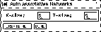
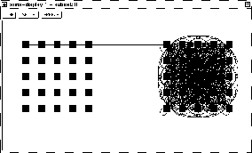

The easiest way to create an autoassociative memory network is with the help of this bignet panel, although this type of network may also be constructed interactively with the graphical network editor. The architecture consists of the world layer (input layer) and a layer of hidden units, identical in size and shape to the world layer, called learning layer. Each unit of the world layer has a link to the corresponding unit in the learning layer. The learning layer is connected as a clique.

To create an autoassociative memory, only 2 parameters have to be specified:
 X-size Y-size.
X-size Y-size.
If the parameters are correct (positive integers), pressing the
 button will create the specified network. If the
creation of the network was successful a confirming message is
issued. The parameters of the above example would create the network
of figure
button will create the specified network. If the
creation of the network was successful a confirming message is
issued. The parameters of the above example would create the network
of figure  . Eventually close the BigNet panel by pressing
the button.
. Eventually close the BigNet panel by pressing
the button.
